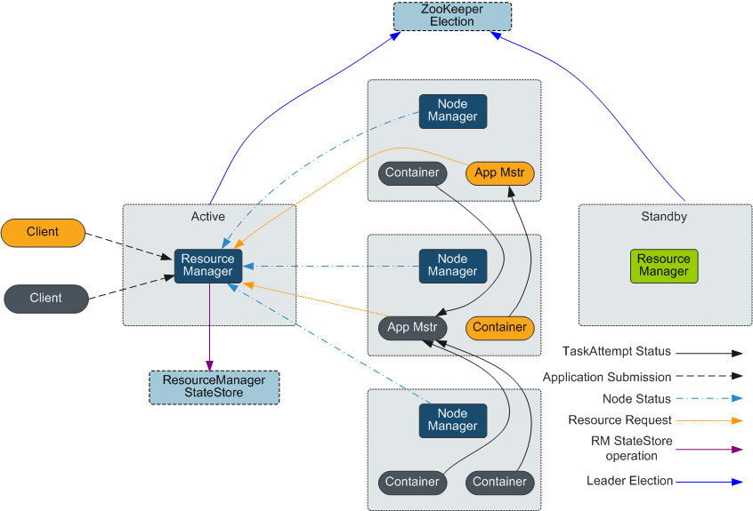

简介
YARN是Hadoop2.0中的资源管理系统，是一个通用的资源管理模块，可以为各类应用程序进行资源管理和调度。YARN并不局限于MapReduce，也可以供其他框架使用，比如Tez、Spark、Storm等。YARN类似于资源管理系统Mesos和更早的Torque。
在最早的Hadoop MapReduce计算架构中，进行作业调度时使用FIFO Scheduler。FIFO是指，所有用户的作业都被提交到一个队列中，然后按照作业的优先级，再按照作业提交时间的先后顺序选择将被执行的作业。Hadoop中只有一个作业队列，被提交的作业按照先后顺序在作业队列中排队，新来的作业插入到队尾。一个作业运行完成后，总是从队首取下一个作业运行。这种调度策略的优点是简单、易于实现，同时也减轻了JobTracker的负担。缺点是，它没有考虑到作业的紧迫程度，另外对小作业的运行不利。因此，逐渐衍生出可以分配资源的Superior Scheduler和Capacity Scheduler。
结构
YARN模型主要由ResourceManager、ApplicationMaster和NodeManager组成，如下图1所示

client | YARN Application客户端，用户可以通过客户端向ResourceManager提交任务，查询Application运行状态等。 |
RourceManage | 负责集群中所有资源的统一管理和分配。接收来自各个节点（NodeManager）的资源汇报信息，并根据收集的资源按照一定的策略分配给各个应用程序。 |
NameNode | NodeManager（NM）是YARN中每个节点上的代理，管理Hadoop集群中单个计算节点，包括与ResourceManger保持通信，监督Container的生命周期管理，监控每个Container的资源使用（内存、CPU等）情况，追踪节点健康状况，管理日志和不同应用程序用到的附属服务（auxiliary service）。 |
ApplicationMaster | 即图中的App Mstr，负责一个Application生命周期内的所有工作。包括：与RM调度器协商以获取资源；将得到的资源进一步分配给内部任务（资源的二次分配）；与NM通信以启动/停止任务；监控所有任务运行状态，并在任务运行失败时重新为任务申请资源以重启任务。 |
Container | Container是YARN中的资源抽象，封装了某个节点上的多维度资源，如内存、CPU、磁盘、网络等（目前仅封装内存和CPU），当AM向RM申请资源时，RM为AM返回的资源便是用Container表示。YARN会为每个任务分配一个Container，且该任务只能使用该Container中描述的资源。 |
在YARN中，资源调度器是以层级队列方式组织资源的，这种组织方式有利于资源在不同队列间分配和共享，进而提高集群资源利用率。如下图所示，Superior Scheduler和Capacity Scheduler的核心资源分配模型相同。
调度器会维护队列的信息。用户可以向一个或者多个队列提交应用。每次NM心跳的时候，调度器会根据一定规则选择一个队列，再选择队列上的一个应用，并尝试在这个应用上分配资源。若因参数限制导致分配失败，将选择下一个应用。选择一个应用后，调度器会处理此应用的资源申请。其优先级从高到低依次为：本地资源的申请、同机架的申请，任意机器的申请。
原理
新的Hadoop MapReduce框架被命名为MRv2或YARN。YARN主要包括ResourceManager、ApplicationMaster与NodeManager三个部分。MRV1 能只能给mapreduce提供服务
ResourceManager：RM是一个全局的资源管理器，负责整个系统的资源管理和分配。主要由两个组件构成：调度器（Scheduler）和应用程序管理器（Applications Manager）。
调度器根据容量、队列等限制条件（如每个队列分配一定的资源，最多执行一定数量的作业等），将系统中的资源分配给各个正在运行的应用程序。调度器仅根据各个应用程序的资源需求进行资源分配，而资源分配单位用一个抽象概念Container表示。Container是一个动态资源分配单位，将内存、CPU、磁盘、网络等资源封装在一起，从而限定每个任务使用的资源量。此外，该调度器是一个可插拔的组件，用户可根据自己的需要设计新的调度器，YARN提供了多种直接可用的调度器，比如Fair Scheduler和Capacity Scheduler等。
应用程序管理器负责管理整个系统中所有应用程序，包括应用程序提交、与调度器协商资源以启动ApplicationMaster、监控ApplicationMaster运行状态并在失败时重新启动等。
NodeManager：NM是每个节点上的资源和任务管理器，一方面，会定时向RM汇报本节点上的资源使用情况和各个 Container的运行状态；另一方面，接收并处理来自AM的Container启动/停止等请求。
ApplicationMaster：AM负责一个Application生命周期内的所有工作。包括：